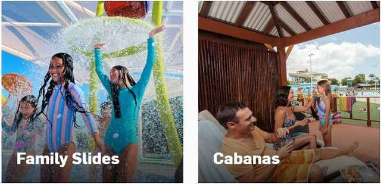
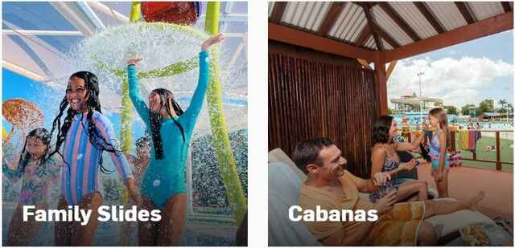

Contrast | ira.nz
Contrast in design is a principle that emphasizes the differences between two different selected elements. It shows a visual contrast to the audience that is interesting to the eye. In this website "ira" shows images of New Zealand environments while layering maori culture designs in a white color to show the contrast. Maori being the native language and culture of the indigeous peoples reinforces this contrast through design in a beautiful way.
Visual Hierarchy | pepsi.com

Visual Hierarchy is a good design principle that puts elements in "order of preference". Scale, contrast, direction and position are important to remember. In this example the use of "scale" of the "Pepsi" brand name and logo are the key elements that stand out the most, because the text and font size draws the audience to the brand. Font size and style make it easy to read. The designers of this website used a video web component which creates "impact" because it is bright with electric bold colors and it moves. The colours and font of the Pepsi name and logo used in the video also draws the audience to the brand. Location, address and other details are located at the bottom of the website as they are of lower preference so fonts and text are smaller in size.
Rule of Thirds | | wetnwild.com.au
 

If you are using "Rule of Thirds" principle in your design, this means that the 'main object' is placed primarily to the left or right third of your page or at the top or bottom third of the page which leaves the other two thirds open. This draws the audience to the 'main object' and to the subject of this website. In this example of "Wet n wild Queensland Australia theme park" the main object are people relaxing and having fun. These groups of "people objects" are positioned in the lower third of the page which focuses the audience attention there first. The park in the background is next to come into view. The Rule of thirds principle is visually appealing to the audience.